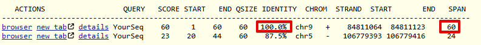
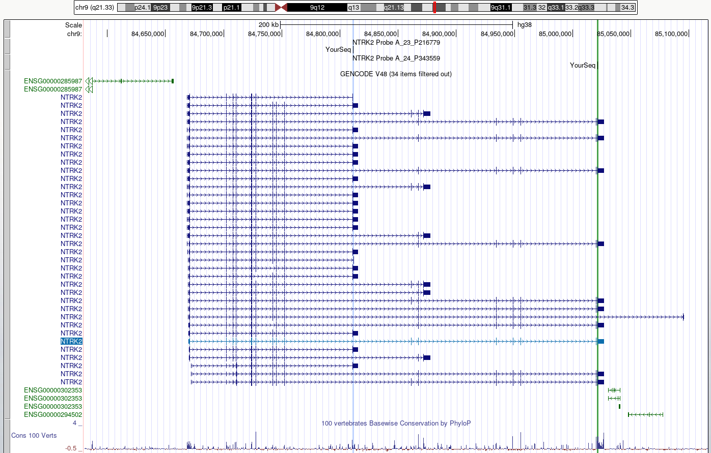
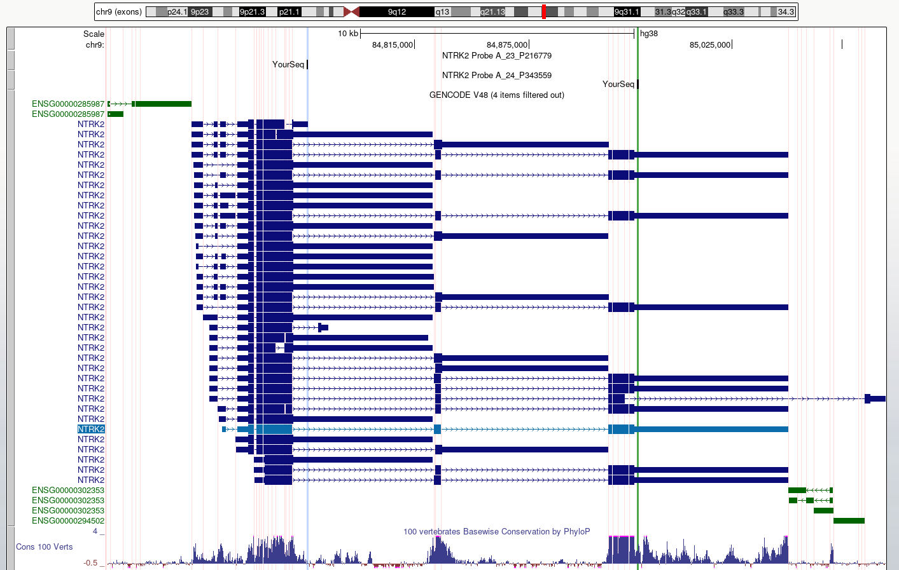

UCSC Genome Browser: BLAT tool
Last updated on 2025-12-22 | Edit this page
Estimated time: 30 minutes
Overview
Questions
- What is the BLAT tool and how do we use it?
Objectives
- Use the BLAT tool to locate genomic regions with similarity to a sequence of interest
The BLAT tool
The BLAT tool is a sequence similarity tool similar to BLAST. It can quickly identify region(s) of homology between a genome and a sequence of interest. Due to the presence of orthologs and paralogs, a target sequence may have similarity to more than one region in the genome.
Exercise
In this exercise, we will employ the BLAT tool to map the sequences of two different expression probes to their target regions and determine which NTRK2 gene transcripts the probes are likely to detect.
A note on microarray expression data
Microarray expression data is not commonly used now, but some of the data generated from large, well-orchestrated studies still provide valuable information to researchers. Microarray probes, like in situ hybridisation probes, target a small region of the RNA and do not measure the whole RNA transcript. If you are measuring gene expression, it is important to know exactly which region of the gene you are detecting.
The study was the Human Brain Gene Expression Atlas generated by the Allen Institute. Below are sequences of two hybridisation probes that were use in a microarray used to detect expression of the NTRK2 gene. These two probes result in very different hybridisation and expression patterns across different regions of the brain. As we observed in the previous exercise, NTRK2 has a number of different transcript variants.
Our question: are these probes detecting different NTRK2 transcripts, and if yes, which ones?
The probes
The images below are of one of the six donors included in the atlas, and typical of the expression pattern for NTRK2. These images are taken from the NTRK2 gene page of Human Brain Atlas.
Most obvious in the images is the high level of expression signal using Probe A_23_P216779 and low level for A_24_P343559 in the corpus callosum (CC), which is a region of white matter in the brain with relatively few neurons and relatively high proportion of myelinating oligodendrocytes. This expression profile is reversed in the the cortical regions, eg. frontal lobe (FL) and parietal lobe (PL), which have a relatively high density of neuronal cells.
Your task
1. Use the BLAT tool to find region of homology
Select
Toolbar > tools > blatCopy the sequence of the first probe above and paste into the search box
Under
Assembly, select the human GRCh38 and clickSubmit

Select
Rename Custom Track. Copy and paste the probe name to use as the label for theCustom track nameandCustom track description. ClickSubmit. It is not necessary to build a custom track, but this enables you to give your sequence a unique name which is important if you are doing multiple BLAT searches and want be able to tell which one is which.Select
browserfor the hit with the highest homology to view the result. Observe which region of the NTRK2 gene this probe will target. Zoom out for context.Note that a new blue bar heading has appeared for your custom tracks.
Repeat for the other probe sequence.
2. Use the highlight tool to keep track of region of interest in the genome view.
It is easy to lose track of a region you are investigating when navigating around the genome in a browser. We are going to highlight each region of probe homology within the NTRK2 gene, using a different colour for each probe. Highlight is also useful if you have lots of different tracks loaded and you want to check that a feature on one track lines up with another.
Use
drag-and-selectto select only the region of homology for each probe within the NTRK2 gene. Use a different highlight for each region.Zoom out to view the whole gene again.

DISCUSS
Do the probes detect coding regions of the NTRK2 gene?
Discuss
Are the probes likely to detect different transcripts?
3. Use ‘Multiregion view’ to make it easier to compare coding regions of different transcripts
Toolbar > View > Multi-RegionSelect
Show exons using GENCODE V48

- We can use the UCSC BLAT tool to identify region(s) of similarity between a sequence of interest and other parts of the genome.